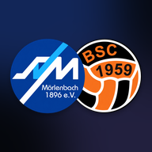

Konto löschen
SVBSC, App und Web-App · Stand 11.11.2026Du kannst dein Konto jederzeit selbst löschen, in der App und im Browser. Es braucht dafür keine Mail und keine Rückfrage.
So geht es in der App
- Oben rechts auf deine Initialen tippen.
- Mein Konto öffnen.
- Ganz unten auf Konto löschen tippen.
- Zur Sicherheit LÖSCHEN eintippen und bestätigen.
Was gelöscht wird
- Dein Konto und deine Anmeldung, dauerhaft.
- Dein Name und deine E-Mail-Adresse.
- Deine Geräte für Mitteilungen.
- Deine Antworten auf Fragen des Vereins, soweit sie an deinem Konto hängen.
Was bleibt
Was du für den Verein eingetragen hast, zum Beispiel ein Training, ein Termin oder eine Aufgabe im Helferplan, bleibt dem Verein erhalten, aber ohne deinen Namen. So bleibt die Organisation für alle anderen nutzbar.
Buchungen der Mannschaftskasse bleiben, solange der Verein sie aufbewahren muss. Das sind nach der Abgabenordnung bis zu zehn Jahre.
Wie lange es dauert
Sofort. Die Löschung passiert in dem Moment, in dem du bestätigst. Sicherungskopien der Datenbank laufen nach spätestens 30 Tagen aus.
Ohne Zugang zur App
Wenn du dich nicht mehr anmelden kannst, schreib uns. Wir löschen dein Konto dann von Hand und bestätigen es dir.
Schulstraße 2, 69509 Mörlenbach
E-Mail: fussball@sv-moerlenbach.de
Datenschutz · Hilfe · Zur App